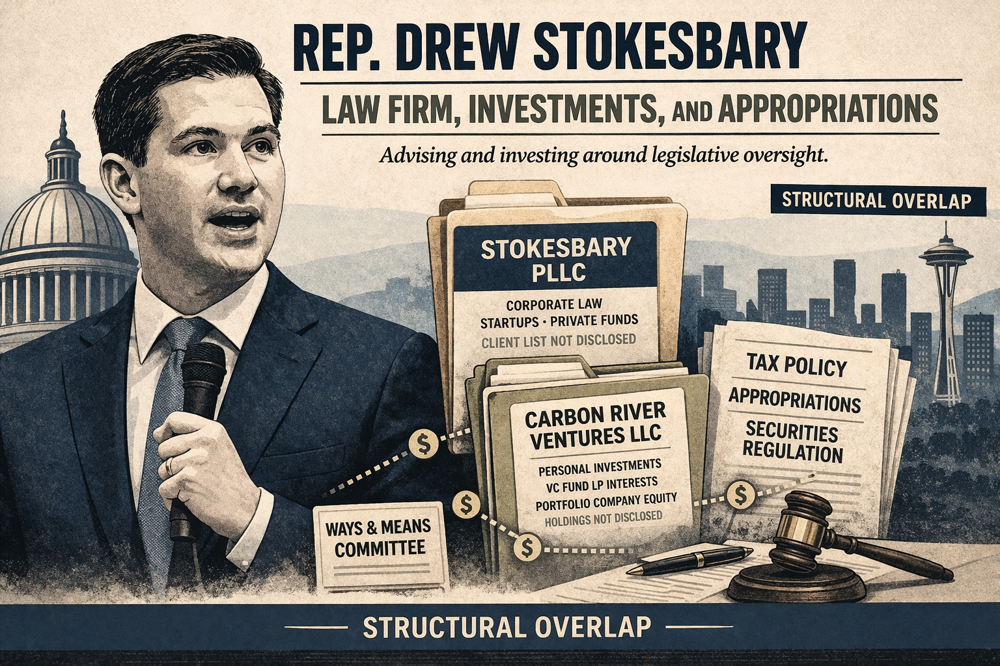

Stokesbary's financial picture is the most structurally complex in the screener. Three distinct income and investment streams all intersect with his committee work, and the F1 discloses the vehicles without disclosing the underlying holdings.
A boutique corporate law firm at 701 Fifth Ave, Suite 4200, Seattle. Per public filings and bar records, the firm advises startups, emerging companies, and private investment funds on corporate governance, securities, M&A, and commercial law. The F1 also shows Chalmers, Adams, Backer & Kaufman LLC pays partnership distributions to Stokesbary PLLC, reflecting an of-counsel role in political and election law.
The client list of Stokesbary PLLC is not disclosed anywhere in the F1. His clients operate in IT, retail, finance, construction, and real estate, all sectors with active legislation before Appropriations and Finance.
This is the critical finding. Carbon River Ventures, registered at his law firm's address, holds two categories of assets per the 2024 F1:
| Asset Class | Disclosed Value | What's Known |
|---|---|---|
| Venture Capital Fund LP Interests | $100K-$200K | Which funds: not disclosed |
| Portfolio Company Securities | $60K-$100K | Which companies: not disclosed |
In 2022, he disclosed $30K-$60K in investment distributions from Carbon River as income. In 2023 and 2024, the income line is blank. The vehicle and its valuations remain on the F1; the contents do not.
A political and election law firm where Stokesbary is a named member. The firm represents Republican candidates, political committees, and redistricting litigants. Per the Chalmers website, he is currently lead counsel in two redistricting cases pending in federal court. This layer is less a financial conflict than a context item: it explains his deep institutional role in Republican Party infrastructure.
The F1 disclosure system was designed for legislators who own farms, law firms, and rental properties. It was not designed for legislators who manage personal investment vehicles holding LP interests in undisclosed venture funds and direct equity in undisclosed startups.
Stokesbary votes on Washington's capital gains treatment, B&O tax structure, startup securities exemptions, R&D tax credits, and technology procurement as ranking member of the committees that set all of these policies. His Carbon River Ventures portfolio holds equity in companies whose valuations, exit timelines, and regulatory costs are directly affected by those votes. The F1 tells us the vehicle exists and what it's worth. It does not tell us what it holds.
This is a more acute version of the MacEwen finding (Nova Satus Venture Fund). The differences: Carbon River is entirely self-managed at his own law firm's address, not a third-party fund; his law firm clients are drawn from the same startup and fund universe his portfolio holds equity in; and as Minority Leader, his influence over Finance and Appropriations outcomes is qualitatively different from a committee member's.
| Committee | Jurisdiction | Overlap |
|---|---|---|
| Appropriations (Ranking Member) | All state spending, operating budget | Startup grants, innovation funds, tech procurement, state contracts |
| Finance | All state tax policy | Capital gains, B&O, R&D credits, securities exemptions |
| Joint Legislative Audit & Review | Tax preference effectiveness | Reviews the very exemptions his clients and portfolio may use |
| Select Committee on Pension Policy | Pension investment policy | Public pension funds invest in VC: potential indirect overlap |
| Expenditure Limit Committee | State spending ceiling | Macro budget constraints affecting all agency spending |
The 2023 F1 discloses travel and hospitality received from organizations with direct legislative interests before Stokesbary's committees:
| Donor | Amount | Description | Relevance |
|---|---|---|---|
| Technology Network (TechNet) | $1,800 | 2023 State Policy Conference, San Francisco | Tech industry lobby; members include Amazon, Apple, Google, Meta |
| Rodel Institute | $750 (2023); $4,000 (2022) | Rodel Fellowship seminars | Bipartisan leadership program |
| State Government Leadership Foundation | $750 | National conference, D.C. | Center-right policy organization |
| Center for American Ideas | $750 | Legislative Leaders Symposium | Conservative think tank network |
| WestRock | $116 (2022); $100 (2023) | Golf and dinner | Packaging company with WA timber supply chain interests |
The TechNet travel is the sharpest item. TechNet is a paid membership organization whose members lobby state legislatures on tech regulation, data privacy, AI policy, and tax treatment. Stokesbary received travel from TechNet while holding undisclosed equity in tech-adjacent companies and ranking on the committee that funds tech procurement.
| Who | Source | Role | Disclosed Amount |
|---|---|---|---|
| Filer | Stokesbary PLLC | Owner / Attorney | $200K-$500K |
| Filer | State of Washington | Legislator | $60K-$100K |
| Filer | Carbon River Ventures LLC | 100% owner | VC fund LP: $100K-$200K Portfolio securities: $60K-$100K 2024 income: not disclosed |
| Filer | Chalmers, Adams, Backer & Kaufman | Member (via PLLC) | Distributions (not itemized) |
Washington Secretary of State business registry lookup on Carbon River Ventures LLC for formation date, registered agent, and any affiliated entities. PDC lobbyist registration cross-reference to determine whether any Stokesbary PLLC clients have registered lobbyists in Olympia. Cross-reference TechNet member companies against Stokesbary's Finance and Appropriations votes on tech-related bills. Review any Washington capital gains legislation votes against Carbon River Ventures distribution timing.
Income ranges, not exact figures. All income figures on this page are PDC-reported bands (e.g. "$100K-$200K"), not verified dollar amounts. A legislator at the bottom of a range and one at the top receive the same treatment. Conclusions drawn from these ranges are approximate.
Washington is a citizen legislature. The state constitution envisions part-time legislators who maintain outside careers. Outside income is expected, not inherently problematic. The presence of outside income on this page is not itself a finding. What matters is the structural relationship between that income and the legislator's official authority.
This is an editorial investigation, not a legal finding. The automated screening score on the legislature page is a first-pass filter that measures structural complexity. This deep-dive profile is a hand-investigated editorial analysis based on public records. Neither constitutes a determination that any law has been violated. The Legislative Ethics Board (LEB) and Public Disclosure Commission (PDC) are the bodies with enforcement authority.